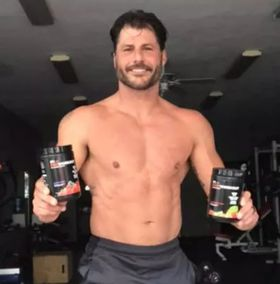

"I went from a lazy, sickly, asthmatic kid to a college student that was still lazy, unhealthy, and unmotivated. It wasn’t until 4 years after this pic that I decided to change my life. Now, I am the opposite of what I use to be. I am motivated, inspired, and far from lazy. And I live my life trying to inspire and motivate others to do more and be more through diet, exercise, confidence building, and anyway that I can. As a mother of 5 young men, I know time management is difficult. But to maximize your time you have to understand your priorities, and I help people realize they should be a priority."

Chrissy

James
"I got into personal training to initially to change my life, my body and mind. I changed my eating habits, my lifestyle and quit drinking 5 and a half years ago. I enjoy helping ppl achieve their goals and be there along the journey."